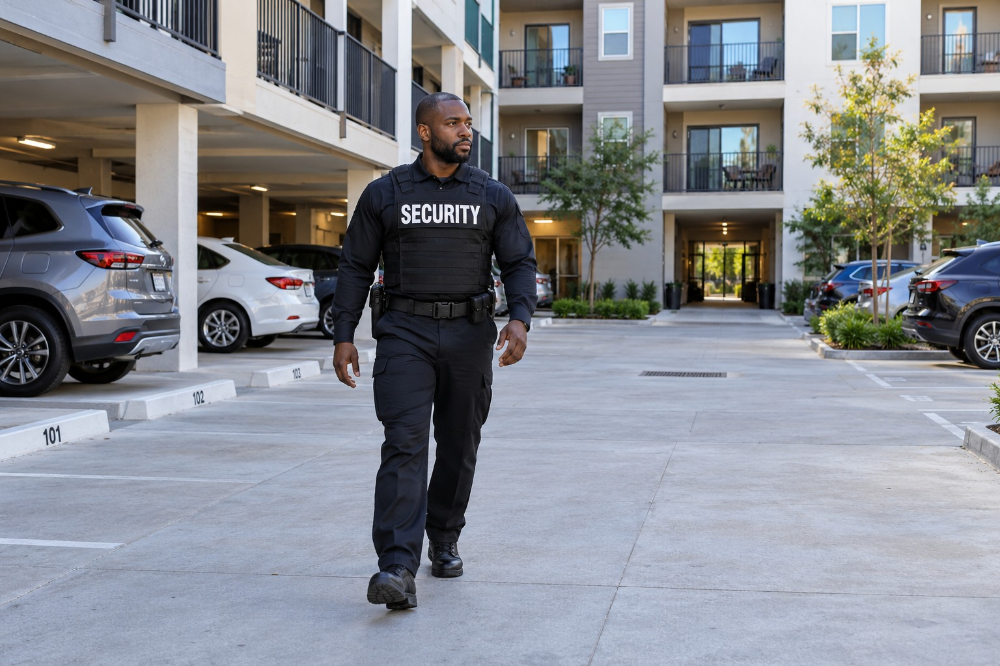

Apartments and Residential Communities

Apartment buildings and residential communities contain spaces used by residents, guests, vendors and delivery personnel. Entrances, parking areas and amenities can generate concerns that need a property level security contact. Paradigm supports managers who want security responsibilities clearly assigned rather than left as an informal expectation of residents or maintenance staff.
Security for Shared Residential Spaces
The residential setting matters. An apartment building with interior common areas differs from a community with several buildings and outdoor amenities. The service can address either setting, but the responsibilities should reflect the actual property. The public description does not reveal resident routines or sensitive information about the site.
Visitor Access and Common Area Observation
Officers can support visitor and vendor access responsibilities established by management. They can observe common spaces, communicate concerns about unauthorized entry and document disturbances within the assignment. Gate security, foot patrol and vehicle patrol may each be relevant, with the specific role confirmed during the consultation.
A security assignment does not give the officer responsibility for every disagreement between residents. Management retains its role in lease matters, community rules and property decisions. Clear boundaries help residents understand what security personnel can assist with and when a concern should go to management or an appropriate outside responder.
Communication With Property Management
Residential security includes a working relationship with the property manager or other authorized representative. Officers can communicate observations and incidents and coordinate with police or emergency services when necessary. Documentation provides a record for management review rather than a promise that every report proves a lease violation or determines legal responsibility.
Armed and unarmed coverage can be reviewed according to the proposed assignment. Selecting one does not automatically establish every duty or level of coverage. BSIS publishes California security guard registration requirements. The service scope and personnel requirements are confirmed for the property rather than inferred from a general residential security label.
Apartment Security Across Both Counties
Paradigm supports residential properties in Los Angeles County and San Bernardino County. Inquiries may involve an apartment building, a larger community or a property management organization overseeing several locations. Each property’s common areas, authorized contacts and security responsibilities are considered separately.
Contact Paradigm to review the concerns affecting your residents and management team. We will identify the service relevant to your property and clarify the relationship between access support, patrol and incident reporting. Personal resident information and site specific arrangements remain part of the private consultation.